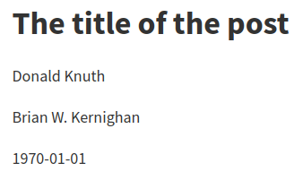

2020-05-04
Pandoc Markdown is well documented, but the thing I’m missing in the manual is seeing the HTML result—so here are all the things pandoc Markdown can do (when producing HTML) and what they look like when rendered!
I’ll cover all the pandoc extensions.
All titles link to the corresponding manual section; examples with Markdown input and rendered HTML output are between horizontal rules.
One or more lines of text followed by one or more blank lines.
Newlines are treated as spaces.
Put two or more spaces at the end of a line for a hard line break.
Like this.One or more lines of text followed by one or more blank lines. Newlines are treated as spaces.
Put two or more spaces at the end of a line for a hard line
break.
Like this.
+escaped_line_breaks
This extension allows hard linebreaks\
with backslash followed by a newline.This extension allows hard linebreaks
with backslash followed by a newline.
A level-one heading
===================
A level-two heading
-------------------## A level-two heading
### A level-three heading ###
# A level-one heading with a [link](/url) and *emphasis*+blank_before_header
This extension requires a blank line before headings to allow for
# at the beginning of a line without creating a
heading:
In the Go GitHub repository, issue
#10000 is about switch statements.In the Go GitHub repository, issue #10000 is about switch statements.
+space_in_atx_header
A space is required between # and the heading text in
ATX headers.
#golang is the hashtag used for Go on Twitter.#golang is the hashtag used for Go on Twitter.
+header_attributes
Assign attributes to headers; I use this in this document to prevent headings from showing up in the table of contents.
## Heading that won't show up in TOC {.unlisted}+implicit_header_references
Reference links for headings are implicitly defined.
### My section title
These all link to the heading of this section:
[My section title],
[My section title][],
[this section][my section title],
[this section](#my-section-title)These all link to the heading of this section: My section title, My section title, this section, this section
Block quotes have each line preceded by > and an
optional space.
> This is a block quote. This
> paragraph has two lines.
>
> 1. This is a list inside a block quote.
> 2. Second item.This is a block quote. This paragraph has two lines.
- This is a list inside a block quote.
- Second item.
A “lazy” form with just one > per block works as
well, but paragraphs seem to be considered separate blockquotes.
> This is a block quote. This
paragraph has two lines.
> 1. This is a list inside a block quote.
2. Second item.This is a block quote. This paragraph has two lines.
- This is a list inside a block quote.
- Second item.
Block quotes can be nested.
> This is a block quote.
>
> > A block quote within a block quote.This is a block quote.
A block quote within a block quote.
The optional blank after > is part of the marker, so
indented code blocks need five spaces after the marker.
> import "fmt"import "fmt"
+blank_before_blockquote
A blank line is required before a block quote.
> This is a block quote.
> > This is not considered nested.This is a block quote. > This is not considered nested.
Indent by four spaces or one tab for a verbatim block.
func main() {
fmt.Println("Hello, world")
}func main() {
fmt.Println("Hello, world")
}+fenced_code_blocks
Wrap code block between lines of at least three ~, where
the end row must be at least as long as the starting row. (Notice how
this confuses the syntax highlighter for Markdown!)
~~~~~~
func main() {
fmt.Println("Hello, world")
}
~~~~~~func main() {
fmt.Println("Hello, world")
}If the code block contains ~, use more ~
outside.
~~~~~
~~~
code including ~
~~~
~~~~~~~~
code including ~
~~~+backtick_code_blocks
Just like fenced code blocks, but with ` instead of
~.
```
func main() {
fmt.Println("Hello, world")
}
```func main() {
fmt.Println("Hello, world")
}+fenced_code_attributes
Attach atttributes to fenced or backtick code blocks. The
numberLines class numbers lines and makes the line numbers
anchors. (number-lines works as well.)
~~~~ {#mycode .go .numberLines startFrom="99"}
type Organs []*Organ
func (s Organs) Len() int { return len(s) }
func (s Organs) Swap(i, j int) { s[i], s[j] = s[j], s[i] }
~~~~~~~~~~~~~~~~~~~~~~~~~~~~~~~~~~~~~~~~~~~~~~~~~~~~~~~~~~type Organs []*Organ
func (s Organs) Len() int { return len(s) }
func (s Organs) Swap(i, j int) { s[i], s[j] = s[j], s[i] }lineAnchors (or line-anchors) is supposed
to make the lines themselves clickable anchors, but all I get is an
empty <a> tag, which isn’t very clickable. This issue seems to
be related, but I didn’t get it to work.
Language selection can be abbreviated:
```go
var start time.Time
```var start time.Time+line_blocks
Blocks where lines begin with | will maintain division
into lines and leading whitespace. Formatting is still applied. When
wrapping, continuation lines must begin with a space.
| Much simpler than, say, FTP,
| What made Gopher appealing to me
| (And of fabulous worth
| Ere the internet's birth)
| Was the hyperlinked knowledge, all free.
| Line continuations *must*
start with blanks.
| Just like this.Different markers can be used. Compact list:
- one
+ two
* three“Loose” list with paragraph for each item:
- one
- two
- threeone
two
three
Item with multiple lines:
- here is my
first item.
- and my second.“Lazy” format is also allowed:
- here is my
first item.
- and my second.List items can have multiple paragraphs and code blocks:
- First paragraph.
Continued.
- Second paragraph. With a code block, which must be indented four
spaces more than the first non-space character after the list
marker:
{ code }First paragraph.
Continued.
Second paragraph. With a code block, which must be indented four spaces more than the first non-space character after the list marker:
{ code }Continuation after a code block has to be indented two more than the list marker:
- code
continuation paragraphcodeLists can be nested; nested lists don’t have to be surrounded by blank lines. The markers have to line up with the first non-space character after the marker of the parent list.
- C-style languages
- C
- C++
- Go
- Soups
- Vegetable soups
- Tomato soup
- Broccoli soup
- Chicken soupContinuation blocks in “lazy” lists must be indented:
- A lazy list item
without indentation on the second line.
- Another lazy list
item without indentation.
A continuation paragraph has to
be indented.A lazy list item without indentation on the second line.
Another lazy list item without indentation.
A continuation paragraph has to be indented.
Standard ordered lists use decimal numbers followed by period and
space; the actual numbers are ignored (but see +startnum
below):
1. one
5. two
7. three+fancy_lists
This extension allows using uppercase/lowercase letters and roman numerals as well as enclosing or just closing parentheses.
+startnum
This extension preserves the starting number of an ordered list.
1. arabic 1 with period
2. arabic 2 with period
a. lowercase with period
a. lowercase with period
i) roman i with closing parens
ii) roman ii with closing parens
(A) uppercase letter A enclosed in parens
(B) uppercase letter B enclosed in parens
A. uppercase letter with period requires two spaces!
B. uppercase letter with period requires two spaces!
(C) is formatted as a list; `+startnum` preserves "C" here
(C\) has to be escaped to prevent list formatting+startnum preserves “C”
here(C) has to be escaped to prevent list formatting
Notice that HTML output still uses periods for all list markers. Other output formats such as LaTeX preserve the marker styling.
Each new list marker type starts a new list:
(2) Two
(5) Three
1. Four
- Five+fancy_lists allows to use # instead of a
numeral:
#. one
#. two
(5) five
(#) six
#) one
#) two+task_lists
Borrowed from GitHub Flavoured Markdown:
- [ ] to do
- [x] done+definition_lists
Borrowed from PHP Markdown Extra. Terms must fit on one line; definitions start with an optionally indented colon or tilde. The definition body (including the first line, minus the marker) is indented four spaces or one tab.
Term 1
: Definition 1
Term 2 with *inline markup*
: Definition 2.1
{ code block, part of definition 2.1 }
Another paragraph in definition 2.1
: Definition 2.2; a term can have multiple definitionsDefinition 1
Definition 2.1
{ code block, part of definition 2.1 }Another paragraph in definition 2.1
Definition 2.2; a term can have multiple definitions
Continuation in definitions can be lazy:
Term 1
: Definition
with lazy continuation.
Continuation block elements still require indentation.Definition with lazy continuation.
Continuation block elements still require indentation.
For compact definition lists, the blank line before the definition can be omitted:
Term 1
~ Definition 1
Term 2
~ Definition 2a
~ Definition 2b with
lazy continuation+example_lists
The @ marker can be used for sequentially numbered
examples across the whole document.
@. Example 1
@. Example 2
Text between examples.
@. Example 3Text between examples.
Numbered examples can be labeled and referred to:
(@label) This is an example.
Example list continuations are always indented by four spaces.
As example @label illustrates, ...This is an example.
Example list continuations are always indented by four spaces.
As example 4 illustrates, …
If list item text is followed by a blank line, it is treated as a paragraph, otherwise the list becomes “compact”.
In this case, “Second” is not followed by a blank line, so it’s not a paragraph:
- First
- Second:
- Foo
- Bar
- Baz
- ThirdInserting an indented code block right after a list results in a continuation paragraph:
- one
- two
{ code }one
two
{ code }
Insert unindented content that won’t produce visible output to end a list:
- one
- two
<!-- -->
{ code }{ code }This also allows separating consecutive lists:
1. one
2. two
3. three
<!-- -->
1. one again
2. two again
3. three againThree or more of *, - or _
(optionally space separated) produce a horizontal rule.
_ _ _ _ _
---
***************+table_captions
An optional paragraph beginning with Table: or just
: before or after the table is used as the table
caption.
+simple_tables
Header and table rows must fit on a single line. Alignment is controlled with the dashed line under the header line.
Right Left Center Default
------ ----- -------- -------
12 12 12 12
123 123 123 123
1 1 1 1
Table: Demonstration of simple table syntax.| Right | Left | Center | Default |
|---|---|---|---|
| 12 | 12 | 12 | 12 |
| 123 | 123 | 123 | 123 |
| 1 | 1 | 1 | 1 |
The table is ended by a blank line or a line of dashes followed by a blank line.
The header row can be omitted; alignment is controlled using the first line of the table body in that case and the dashed final line is mandatory.
---- ---- ----- ----
12 12 12 12
123 123 123 123
1 1 1 1
---- ---- ----- ----| 12 | 12 | 12 | 12 |
| 123 | 123 | 123 | 123 |
| 1 | 1 | 1 | 1 |
+multiline_tables
Like simple tables, but require row of dashes above header text and after table; rows must be separated by blank lines. Writers adapt column width to relative input widths.
----------------------------------------------------------
Centered Default Right Left
Header Aligned Aligned Aligned
---------- ------- -------------- ---------------------
First row 12.0 Example of a row that
spans multiple lines.
Second row 5.0 Another multiline row
after a blank line.
----------------------------------------------------------
Table: This is the multiline
table caption.| Centered Header | Default Aligned | Right Aligned | Left Aligned |
|---|---|---|---|
| First | row | 12.0 | Example of a row that spans multiple lines. |
| Second | row | 5.0 | Another multiline row after a blank line. |
The header can be omitted.
----------- ------- --------------- -------------------------
First row 12.0 Example of a row that
spans multiple lines.
Second row 5.0 Here's another one. Note
the blank line between
rows.
----------- ------- --------------- -------------------------
: Here's a multiline table without a header.| First | row | 12.0 | Example of a row that spans multiple lines. |
| Second | row | 5.0 | Here’s another one. Note the blank line between rows. |
+grid_tables
The header is separated by a row of = and can be
omitted. Cells may contain arbitrary block elements.
: Sample grid table.
+---------------+---------------+--------------------+
| Fruit | Price | Advantages |
+===============+===============+====================+
| Bananas | $1.34 | - built-in wrapper |
| | | - bright color |
+---------------+---------------+--------------------+
| Oranges | $2.10 | - cures scurvy |
| | | - tasty |
+---------------+---------------+--------------------+| Fruit | Price | Advantages |
|---|---|---|
| Bananas | $1.34 |
|
| Oranges | $2.10 |
|
Alignment is controlled with colons in the header separator line.
+---------------+---------------+----------------------+
| Right | Left | Centered |
+==============:+:==============+:====================:+
| Bananas | $1.34 | ```go |
| | | fmt.Println("hello") |
| | | ``` |
+---------------+---------------+----------------------+| Right | Left | Centered |
|---|---|---|
| Bananas | $1.34 | |
Headerless tables have the alignment control on the top line.
+------:+:-----+:--------:+
| Right | Left | Centered |
+-------+------+----------+
| x | x | x |
+-------+------+----------+| Right | Left | Centered |
| x | x | x |
+pipe_tables
These seem to be the same as the tables in GitHub Flavored Markdown.
| Right | Left | Default | Center |
|------:|:-----|---------|:------:|
| 12 | 12 | 12 | 12 |
| 123 | 123 | 123 | 123 |
| 1 | 1 | 1 | 1 |
: Demonstration of pipe table syntax.| Right | Left | Default | Center |
|---|---|---|---|
| 12 | 12 | 12 | 12 |
| 123 | 123 | 123 | 123 |
| 1 | 1 | 1 | 1 |
The header can’t be omitted; the beginning and ending pipe characters are optional.
fruit|price
-----|-----:
apple|2.05
pear|1.37
orange|3.09| fruit | price |
|---|---|
| apple | 2.05 |
| pear | 1.37 |
| orange | 3.09 |
If the table is wider than the column width, cell contents wrap with the relative column width determined by the number of dashes in the line separating the header from the table body.
wide column|narrow column
---|-
short text|longer text which wraps because there's only one dash on this side| wide column | narrow column |
|---|---|
| short text | longer text which wraps because there’s only one dash on this side |
Instead of | to separate fields in the delimiter row,
+ also works.
| One | Two |
|-----+-------|
| my | table |
| is | nice || One | Two |
|---|---|
| my | table |
| is | nice |
+pandoc_title_block
Specify title, author and date in a title block at the beginning of the file:
% The title of the post
% Donald Knuth; Brian W. Kernighan
% 1970-01-01
This also sets meta tags for the authors and the date:
<meta name="author" content="Donald Knuth" />
<meta name="author" content="Brian W. Kernighan" />
<meta name="dcterms.date" content="1970-01-01" />Author and date get separate classes and can be styled with CSS.
Date or date and authors can just be skipped; to skip the title, or skip the authors but use a date, blank lines have to be used.
+yaml_metadata_block
Arbitrary metadata can be set in a YAML block; I use this to control
table of contents generation. The template has to match the
structure; the default HTML template includes for example a
keywords array.
---
keywords:
- unix
- linux
...which results in metadata like
<meta name="keywords" content="unix, linux" />With a little template fiddling, this can become a tagging system.
+all_symbols_escapable
Any symbol can be escaped to prevent it from having a formatting
effect. An escaped space (supposedly) becomes a literal Unicode
nonbreaking space. Like with +escaped_line_breaks, an
escaped newline is a hard linebreak.
*\*hello\**
**hello**\
escaped\ space*hello*
hello
escaped space
Emphasis is toggled with * or _; when
escaped or surrounded by spaces, they won’t trigger emphasis.
Use *asterisks* or _underscores_ for emphasis.
**Double them** for __strong emphasis__.
\*Escaped\* or _ standalone _ characters are literal.Use asterisks or underscores for emphasis.
Double them for strong emphasis.
*Escaped* or _ standalone _ characters are literal.
+intraword_underscores
_ within a word is not an emphasis marker; use
* to emphasize parts of a word.
*Emph*asized, but un_im_pres_sed.Emphasized, but un_im_pres_sed.
+strikeout
Strike out words by delimiting with ~~; this renders as
a <del> element.
Coffee is ~~a drug~~ the best thing ever!Coffee is a drug the best thing ever!
+superscript, +subscript
Use ^ and ~ for superscript and subscript.
Spaces in the super-/subscripted text have to be escaped.
Super^script^ and sub~script~
P~is\ correct~ but P~is wrong~Superscript and subscript
Pis correct but P~is wrong~
Verbatim text goes inside backticks; use double backticks to include a backtick.
Check out the `README.md`.
Prefer `$(cmd)` over `` `cmd` ``.Check out the README.md.
Prefer $(cmd) over `cmd`.
+inline_code_attributes
Inline code takes the same attributes as fenced code blocks.
Use `for f in ./*`{.bash} instead of `for f in $(ls)`{.bash}.Use for f in ./*
instead of for f in $(ls).
There is a smallcaps class; this example uses the
bracketed_spans extension (see Divs and Spans), an HTML
class attribute and inline CSS.
[With an extension]{.smallcaps}
<span class="smallcaps">With an HTML class attribute</span>
<span style="font-variant:small-caps">With inline CSS</span>With an extension
With an HTML class attribute
With inline CSS
+tex_math_dollars
Text between pairs of $ or $$ is rendered
as TeX Math. For HTML without further options, Unicode characters are
used; use MathJax for better results (as done for this post).
Einstein came up with $E = m\text{c}^2$.
This is Euler's formula: $$e^{i \cdot pi} = -1$$
Escape literal dollar signs to prevent math rendering: \$bling\$
$10,000 and $20,000 don't have to be escaped.Einstein came up with \(E = m\text{c}^2\).
This is Euler’s formula: \[e^{i \cdot \pi} = -1\]
Escape literal dollar signs to prevent math rendering: $bling$
$10,000 and $20,000 don’t have to be escaped.
+raw_html
Raw HTML can be included directly.
+markdown_in_html_blocks
Unlike original Markdown, this extension will still interpret
Markdown in raw HTML blocks (except within <script>
and <style> elements).
<details>
<summary>What is your **Bash version**?</summary>
```bash
$ echo $BASH_VERSION
5.0.3(1)-release
```
</details>$ echo $BASH_VERSION
5.0.3(1)-release+native_divs, +native_spans
These took me a while to understand, but after reading through this long issue, I
believe all they do is convert <div> and
<span> elements (enabled via
markdown_in_html_blocks) into Div and
Span blocks in the pandoc AST, but when writing to HTML,
the result is the same. They are meant mostly for usage with pandoc
filters.
+raw_tex
This allows to write inline LaTeX, but it is ignored for HTML output.
+raw_attribute
This allows inserting raw blocks of any target format and is of limited use when targeting HTML as we can already insert HTML in Markdown.
```{=html}
<p>This is HTML in a <i>raw</i> block.</p>
```
This is `<b>HTML</b>`{=html} in an inline raw block.This is HTML in a raw block.
This is HTML in an inline raw block.
+latex_macros
This lets you define LaTeX macros, and they are applied to LaTeX math and raw LaTeX.
\newcommand{\tuple}[1]{\langle #1 \rangle}
$\tuple{a, b, c}$\(\langle a, b, c \rangle\)
URLs and email addresses enclosed in <> become
links. (Tangent: there is an option to obfuscate the produced email
address, --email-obfuscation,
which might come in handy.)
<https://www.benjaminwuethrich.dev>
<benjamin@benjaminwuethrich.dev>https://www.benjaminwuethrich.dev
benjamin@benjaminwuethrich.dev
The first of the two “classic” styles.
Link: [example](https://example.com)
Link with title: [example](https://example.com "Example website")
Email addresses need the `mailto` explicitly: [email
joe](mailto:joe@example.com)Link: example
Link with title: example
Email addresses need the mailto explicitly:
email joe
Link definitions have an optional title (which can be on a separate
line). The URL can be enclosed in <>; labels are case
insensitive. Explicit reference links have a separate label; in implicit
links, the second pair of brackets is empty.
Link definitions can appear in nested elements.
Many links: [link 1][label 1], [link 2][label 2], [link 3][label 3],
[link 4][label 4], [link 5][label 5], [link 6][label 6],
[link 7][LABEL 7], [implicit link][].
[label 1]: /index.html "Optional title"
[label 2]: /index.html
[label 3]: https://github.com/ (Title in parentheses)
[label 4]: #paragraphs 'Title in single quotes'
[label 5]: <https://example.com> "URL with angle brackets"
[label 6]: https://example.com
"Title on another line"
[label 7]: /index.html
[implicit link]: /index.html
> A block [quote][].
>
> [quote]: /index.htmlMany links: link 1, link 2, link 3, link 4, link 5, link 6, link 7, implicit link.
A block quote.
+shortcut_reference_links
This allows to drop the empty second pair of brackets in implicit reference links.
A link to [my TAOP summary].
[my TAOP summary]: /2020-04-05-taop-summary.htmlA link to my TAOP summary.
Use [heading identifiers](#heading-identifiers). See the [Headings
section].
[Headings section]: #headingsUse heading identifiers. See the Headings section.
A link preceded by ! is treated as an image. The link
text is used as the image’s alt text, and the link title becomes the
image title.
+implicit_figures
An image with alt text alone in a paragraph is rendered as a figure
with caption; in HTML, this is done using a <figure>
element containing a <figcaption> element.
To avoid that, add a nonbreaking space after the image.


\
+link_attributes
This allows to set attributes on links and images, which can be used
for styling. width and height can be used to
control image size; values are converted to pixels using 96dpi. The
--dpi option and dpi image metadata don’t seem to have an
effect for HTML output.
![With `width=10%`][image1]
[image1]: images/2020-05-04-bashman.png {width=10%}
![With `height=30px`][image2]
[image2]: images/2020-05-04-bashman.png {height=30px}
![With `height=30px width=100px`][image3]
[image3]: images/2020-05-04-bashman.png {height=30px width=100px}
![With `width=1in`; becomes 96px][image4]
[image4]: images/2020-05-04-bashman.png {width=1in}+fenced_divs
This allows to create native Div blocks; in HTML output,
they become <div> blocks. Attribute syntax is the
same as for fenced code blocks. Fenced
divs can be nested.
<style>
.warning, .error {
padding: 10px;
}
.warning {
color: #9F6000;
background-color: #FEEFB3;
}
.error {
color: #D8000C;
background-color: #FFD2D2;
}
</style>
::::: warning
This is a warning.
::: error
Nested error!
:::
:::::This is a warning.
Nested error!
+bracketed_spans
A bracketed sequence directly followed by attributes becomes a
Span.
Here is an [inline warning!]{.warning}Here is an inline warning!
+footnotes
This allows footnotes. If the footnote contains multiple paragraphs, they must be indented.
Here is some text,[^1] and then some.[^label]
[^1]: And a footnote!
[^label]: This one has multiple paragaphs.
Continuation is indented.
{ code }Here is some text,1 and then some.2
+inline_notes
Footnotes can be inlined, but then you can’t use multiple paragraphs.
This is the text.^[And this is the inline footnote.]This is the text.3
+citations
Together with the --citeproc option, this allows
generating citations and a bibliography. For this document, I’ve
used
pandoc-citeproc --bib2yamlto generate a CSL YAML bibliography with three entries and stuck it
into the references field in the YAML front matter. I
haven’t changed the Citation Style Language, so it defaults to Chicago
Manual of Style author-date format.
I have set link-citations: true, which turn references
into links to the bibliography.
Citations go into square brackets:
Blah blah [see @Ritchie1974, pp. 367-370; also @Wheeler1952, p. 235].
Blah blah [@Ritchie1974, pp. 367-368, 370-372 and *passim*].
Blah blah [@Ritchie1974; @Wheeler1952].Blah blah (see Ritchie and Thompson 1974, 367–70; also Wheeler 1952, 235).
Blah blah (Ritchie and Thompson 1974, 367–68, 370–72 and passim).
Blah blah (Ritchie and Thompson 1974; Wheeler 1952).
The locator terms such as pp.,
chapter etc. are all recognized by
pandoc-citeproc and handled according to the selected
style.
The locator can be explicitly separated from the suffix in complex cases:
[@Ritchie1974{ii, A, D-Z}, with a suffix]
[@Wheeler1952, {pp. iv, vi-xi, (xv)-(xvii)} with suffix here](Ritchie and Thompson 1974, ii, A, D–Z, with a suffix)
(Wheeler 1952, iv, vi–xi, (xv)–(xvii) with suffix here)
The author can be suppressed in the citation with -@,
and there are in-text citations:
Ritchie says blah [-@Ritchie1974].
@Wheeler1952 says blah.
@Wheeler1952 [p. 235] says blah.Ritchie says blah (1974).
Wheeler (1952) says blah.
Wheeler (1952, 235) says blah.
To list the works cited, a div with ID refs can be
used:
::: {#refs}
:::If there isn’t one (like in this document), the bibliography goes at
the end. I have set a section title for it in the metadata file using
reference-section-title.
An item that wasn’t actually cited can be added to the bibliography
by including a nocite metadata field:
---
nocite: |
@Licklider1968
...A wildcard @* can be used to get all citations in the
bibliography.